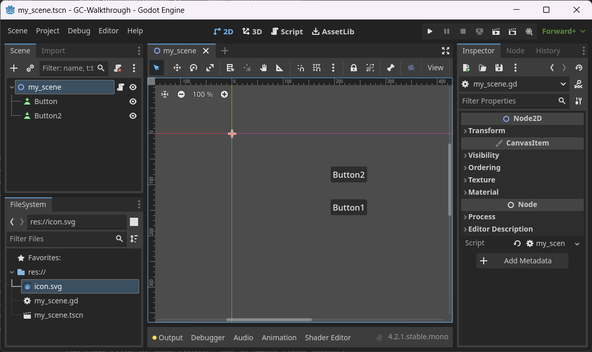
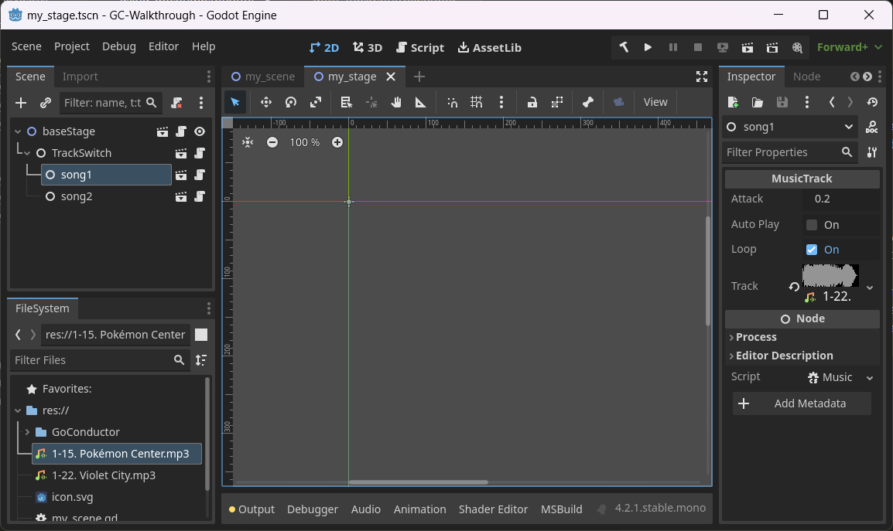

Using GoConductor
Hello! Here you will be guided through setting up your first project with GoConductor, plus provided documentation for all of the new classes you will be using. Excuse the raw HTML. I hope you find this sufficient for guiding you through usage of the library. If you have any further queries, have encountered any errors, or believe something is unclear, please contact me at haaa20@sussex.ac.uk, or on Discord if you have me.
Download
GitHub release
Getting stared
Everything GoConductor needs to work is contained within a single directory. As of this version, you don't need to install it as a plugin, you can really just drag and drop the extracted folder into your project. There are a couple of things you need to make sure of first, however:
-
The folder must be at the top level of your project structure, ie 'Your Project\GoConductor', not 'Your Project\Another Folder\GoConductor'
-
You must complete a c# build after importing GoConductor. This means GoConductor is only compatible with the '.net' version of Godot. If you are using '.net', and can't see the 'build' option (a small hammer icon in the top right next to 'play') you may not have created a c# solution yet. You can do this in 'Project > Tools > c# > Create c# Solution'.
Finally, for complete functionality, add 'GoConductor.tscn' as an autoload in your project settings (you can read more about singletons (autoload) here, in the official documentation, if you're not sure about this step). Make sure you pick the '.tscn' file, not just the '.gd' script! The default name 'GoConductor' is what's intended (and what I've tested for...!), but if you want to load it under a different name, you can.
The Documentation
Here you'll find the class documentation for the new types you'll be using:
The Stage System
The intended workflow of GoConductor is thus: you create stages, scenes containing the music/sound you want in a certain category (eg 'zone_1_music', 'ui_sfx', etc.) Exactly how you organize these is up to you. You can then load, access, and unload these stages as needed from any other script in your project, controlling the audio dynamically as you need. You can, of course, still use the classes introduced by GoConductor however you want outside of stages (you don't need to use stages at all if you have your own system you prefer, but it provides additional framework). The new types added by GoConductor are simple scripts. Included in the 'GoConductor/Nodes' directory are scenes containing nodes with these scripts attached, ready to be instanced - this will save you adding them to nodes manually.
Your First Stage
Here I'll walk you through a very simple use case of GoConductor. if you feel confident enough, or would rather learn by doing, you can stop reading now and get stuck in! Otherwise, all you'll need to get started is GoConductor, two song files of your choice, and an empty Godot project.
-
Create a new 2d scene in your project, give it a name (eg. my_scene) and save it. Add two Button nodes, making sure that they are both on screen, and have different labels so that you can tell them apart. Next add a new script to the root Node2d, but you don't need to write anything in it yet. it should look something like this:

-
Now let's import GoConductor, as well as the two songs as '.wav', '.ogg', or '.mp3' files. The songs can just be dragged and dropped into the project structure from your file explorer. GoConductor can also be dragged and dropped, pasted, or extracted straight from the '.zip' file. Just remember to follow the steps from 'Getting Started' above.
-
Create a new stage. You can do this by navigating to the 'GoConductor\Stages' directory in the editor, right clicking on 'BaseStage.tscn' and selecting 'new inherited scene'. We want this stage to allow us to transition between our two track whenever we want to. To do this, we'll add a 'MusicSwitch' as a child of our stage. Instance one from 'GoConductor\Nodes'. The MusicSwitch can make sure that only one of it's children is playing at one time, ie the one that was most recently cued. For this to work it'll need some children. Instance two 'MusicTrackPlayers', found in the same folder, as children of the MusicSwitch. Each MusicTrackPlayer is given control over one audio track, which is set as a property of the node in the editor (just like the texture for a Sprite2D). give each MusicTrackPlayer a different song, and a name so you can tell them apart. Make sure to save the stage scene in the 'GoConductor/Stages' folder It should look something like this.

-
Now we've done everything we need to with our stage, so back to our original scene. First, we need to make sure our stage is loaded when our scene is. Open the script you added to the scene root, and in the '_ready()' function, call the method "load_stage" from GoConductor, passing it the name of the stage you just made. Like this:
func _ready():
GoConductor.load_stage("my_stage")
This means our stage will be ready, waiting in the background, alongside our screen. Next, we need to connect the 'pressed' signal from each button to two different empty functions in the root script. (you can read more about signals here). in the body of each function, we want to call our stage to cue one of the two songs. This can be done using 'GoConductor.get_stage_pointer.CueName(...)'. Your script should look like this.
func button_1_pressed():
GoConductor.get_stage_pointer("my_stage").CueName("song1")
GoConductor.get_stage_pointer("my_stage").Play()
func button_2_pressed():
GoConductor.get_stage_pointer("my_stage").CueName("song2")
GoConductor.get_stage_pointer("my_stage").Play()
A thorough breakdown of these functions can be found in the documentation linked above, but for a brief explanation:
'get_stage_pointer' fetches the child, or children, of the stage of the given name. In our case, the only child is a a MusicSwitch, so it returns that. If there were more than one child, it would return an array.
On the MusicSwitch, we then call 'CueName'. This searches for a child node of the given name, and (if it find it) gets it ready to be played.
Finally, we tell the MusicSwitch to play the song. If we forgot to do this (like I definetly didn't do when running through this myself), the song would be all ready to go, but would never play!
-
You're done! If you play the scene, you should fine that you can cue each song at the click of a button, and that the transition between them is done automatically!
This was a very simple example, but (along with the documentation) should give you enough of an idea of how GoConductor works to start using it for yourself. Happy testing!